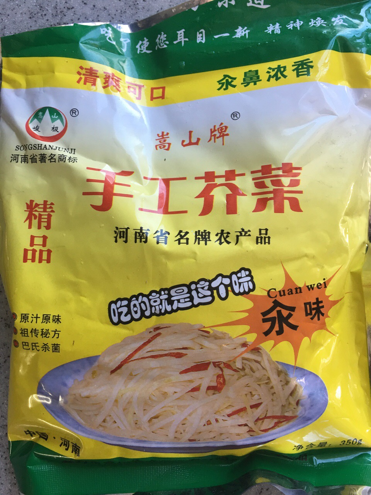

早餐我建议明俊尝下我买的咸菜，他对我推荐的吃物向来嗤之以鼻，于是我讲了个往事。
小时侯我妈妈每年都会腌一坛子芥菜丝，芥菜头很硬，切起来很费事，又不能用搽丝器，因为会影响口感，之后用炒锅炒断生，调味后入坛密封，一周后可食。有一年我自告奋勇帮忙炒断生，自以为是，妈妈之前再三告诫说上下翻炒一遍即可，我觉得太生，至少翻炒了三遍，装坛密封，忙活了一下午。后来开坛吃了两顿后，妈妈就默默地把一坛子芥菜丝都倒掉了，可惜死了。所以，现在想吃就自己买啰。
明俊尝了尝，问是不是跟芥末的根。我说是的，河南拌凉菜经常用黄芥末，芥菜丝咸菜也特有。明俊说味道不错。艾妈，就为劝人吃个咸菜而已，我还讲了个故事。故事确实有效。
小时侯我妈妈每年都会腌一坛子芥菜丝，芥菜头很硬，切起来很费事，又不能用搽丝器，因为会影响口感，之后用炒锅炒断生，调味后入坛密封，一周后可食。有一年我自告奋勇帮忙炒断生，自以为是，妈妈之前再三告诫说上下翻炒一遍即可，我觉得太生，至少翻炒了三遍，装坛密封，忙活了一下午。后来开坛吃了两顿后，妈妈就默默地把一坛子芥菜丝都倒掉了，可惜死了。所以，现在想吃就自己买啰。
明俊尝了尝，问是不是跟芥末的根。我说是的，河南拌凉菜经常用黄芥末，芥菜丝咸菜也特有。明俊说味道不错。艾妈，就为劝人吃个咸菜而已，我还讲了个故事。故事确实有效。

- 